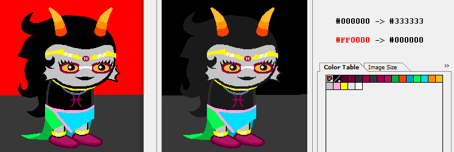
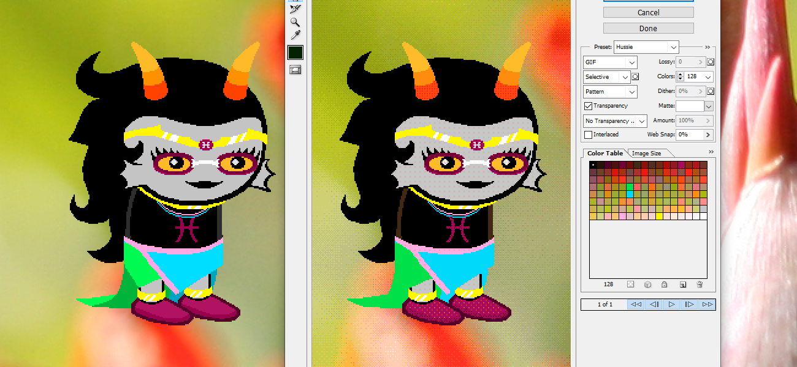
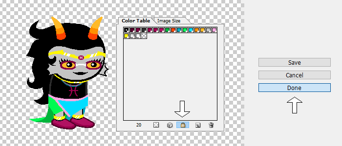
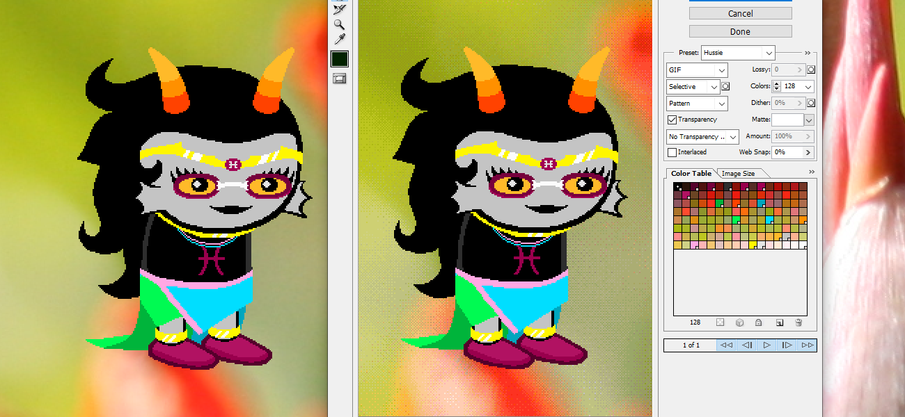
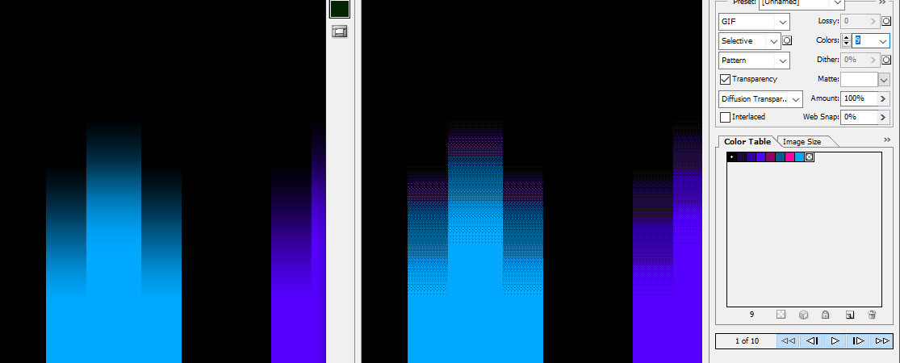
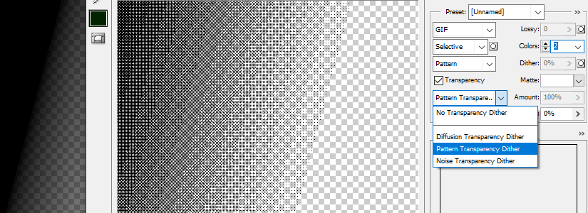
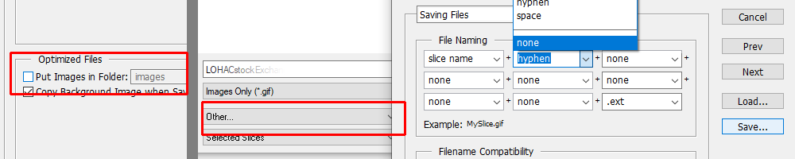
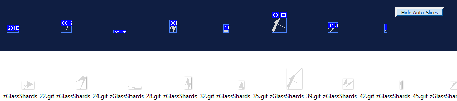
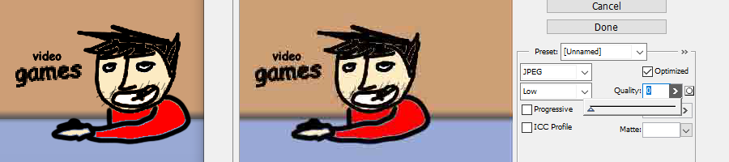
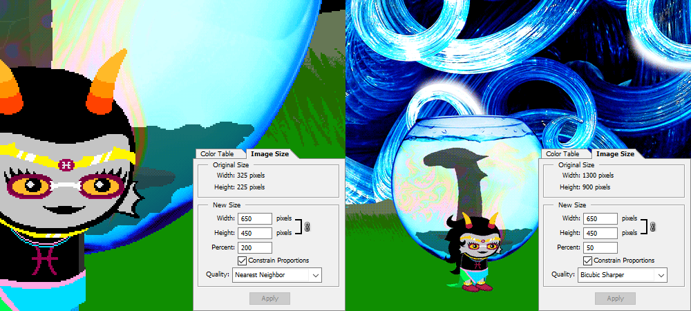

Save for Web Power User Tutorial
Guide to making the most out of the MSPA GIF export process.
Alright, I know I was brought in (pft) to talk about animation, but, here’s an extra course on Photoshop’s Save For Web export tool.
If you’ve never even touched this tool, I go over the basics of MSPA-accurate exporting in
this piece, so you should at least know what SFW exporting is. Wait, that implies there’s also nsfw exporting. Nevermind, I’ll just write the whole Save for Web everytime.
Now for the tricks.
Color Palette Editing
Save for Web allows you to change every color in the current exported palette, affecting all pixels of that color.
If you have an animated, layered character on a black void background, you don’t wanna waste time bucket tooling every layer in their body gray, so you can use Palette Editing instead when exporting.
In this example, my assistant Feferi is still using matte black outlines in the Photoshop file, and is put against a flat red background.
In Save for Web, double click the colors and set them to your newly desired values- First, change the black color to a dark gray, then change red to black.
If you aren’t sure you’re selecting the right colors from the palette, you can use the eyedropper tool on the left, and it’ll highlight the corresponding square on the palette.

Color Palette Locking

Feferi, what are you doing against that high color variance flower? Look at how dithered and artifacted your sprite got.
This problem actually happens a lot in homestuck, for example, the Curious Case of the
Cyan Slimer Shirt. The FIFO/FILO cards above egbert are downscaled and antialiased, which hogged the color palette.
To avoid this issue, you can Lock in selected colors in the export menu. There’s multiple ways to do this, but here’s the most reliable one:
Hide all layers, save for ones containing colors you want preserved.
Then, open Save for Web, select all of those colors (hold Shift!), and press the small Lock icon. Then, click Done, making the program remember these locked settings while not exporting just yet.

Now, go back to your file and animate, pose and re-enable all layers as needed.
When you Save for Web next time, any additional colors calculated in will not erase the Locked in colors, preserving those details perfectly.

Using manual Color Limits
As should be seared into your brain by now, the traditional Homestuck GIF maxes out at 128 colors.
However, if like me, you enjoy the results of pattern dithering in compression, and want the effect to show up on purpose for flare,
You can throttle down the colors of a GIF to cause the effects on purpose. (Color locking is useful for this, so you can just throttle gradients and not the main colors.)

Lowering this picture to just 9 colors makes for “automatic dithering pixel art” of sorts.
Exporting this and then using the lower-fidelity frames in the background of, say, Derse buildings, can make for nice, quick to make and appealing background textures. I call these “prebaked dithers” in my files, but that’s just me naming things whatever.
Color throttling can be used to make other cool automatic pixel art effects, like here, where I fade in various layered blobs of blackness, but limit the gif to 2 colors for effect.
You can also make these effects transparent!
Not traditionally enabled in
the settings hussie uses, you can enable Dithered Transparency in the Save for Web menu, and limiting that to 2 colors let me make this nice prebaked dither gradient.

Multi-slice exports
There’s a chance you’ve been exporting some pictures by now, and were handed out some supplementary rectangles of the rest of your file you had to delete.
To avoid this, on the bottom of the Save Location dialog (after hitting Save in SFW), choose Selected Slices instead of the default All Slices. Photoshop has a habit of forgetting this setting, so keep an eye on this one when saving here and there, or just be ready for this.
Also, your files might’ve been saving into a new annoying folder called Images.
On the same Save dialog, press the option above Selected Slices, press other, and disable all of these tickboxes. This should simplify the filenames too.

Now that you know how to avoid exporting multiple layers, here’s how to do it on purpose for a reason.
Say you wanna export a lot of small assets fast, from one file, into unique individual exports.
Put a slice around each thing you want exported- and before your screen gets obliterated by auxiliary dotted lines, hit that Hide Auto Slices button.

Now when exporting in Save for Web, I selected all of them (Use shift!) using the Slice Selector (K), and they all get exported individually into their own file. Time = Saved.
Sweet Bro and Hella JPEG
This is a more widely-known trick, as Hussie has mentioned it on Formspring once, but it’s worth illustrating the process too:
If you wanna absolutely demolish some poor picture into artifact hell, select the JPEG as the filetype instead of GIF in Save for Web, and lower the quality to 0.
Then, screenshot/export that into your existing file.
Repeat this process while adding more and more manual noise, like sharpening and rotation artifacts, to worsen the picture to your heart’s content.

I still find the idea of a “0 quality JPEG” exceedingly funny.
Image Size menu
I’ve already went over this in my Introduction to MSPA animation piece, so I won’t burden you with more “reading” and “words” and such.
Here’s a simple visual illustration: upscaling uses clean pixels, downscaling uses antialiasing. Capiche?

(Note how upscaling within Save for Web makes for true 1px sized dithering, while rendering the picture small THEN upscaling the result would make 2px dither pixels. This Matters I Think)
That’s it from me. Thanks for reading!